Матеріали Дентсплай · журнал «ДентАрт» 2015 №4
Екстремальні реставрації: штифтувати, не штифтувати. Частина 1
EXTREME RESTORATIONS WITH A POST OR WITHOUT POST. PART 1
Стоматологія — екстремальна професія. Лікар ризикує своїм часом, досвідом, репутацією, пацієнт ризикує вкладеними в лікування засобами, часом, і найголовніше — своїм здоров'ям. Від тих рішень, які будуть прийняті оператором щодо відновлення сильно зруйнованих зубів, залежить можливість не лише виконуваної реабілітації, але й реабілітації майбутньої, оскільки інвазивні маніпуляції незворотні і можуть погіршувати ситуацію надалі. Жодне каріозне ураження не може зрівнятися за ступенем інвазії з ятрогенними маніпуляціями стоматолога.
Звичайно, ніхто з тих, хто пов'язаний із сучасною стоматологією або дослідницькими роботами, не заперечуватиме прогресу, досягнутого у дентальній імплантології. Але для людей, котрі намагаються зберегти свої природні зуби довше, ендодонтичне, відновне і навіть повторне лікування — досить привабливий і корисний варіант відновлення функції зуба. У першій частині статті ми розглянемо, в яких випадках необхідно застосовувати штифтові конструкції при відновленні сильно зруйнованих зубів.
Біомеханіка девітального зуба
Як же змінюються тканини зуба за девіталізації? Традиційна точка зору, яка говорить, що тканини девітального зуба більш ослаблені, ніж вітального, і тому для його відновлення потрібні матеріали з підвищеними характеристиками міцності, правильна лише частково.
Прийнято вважати, що девітальний зуб більш крихкий через втрату вологи і зміни характеристик міцності дентину. Однак багато дослідників довели, що втрата вітальності зуба не супроводжується значними змінами кількості води у його тканинах або структури колагену дентину. Проаналізувавши дослідження, побачимо, що води за об'ємом і масою у вітальних і девітальних зубах приблизно рівна кількість (середні показники вмісту води у вітальному зубі близько 12,35%, у девітальному — близько 12,10%). Однак зв'язана вода зубного ліквору у вітальних зубах завдяки гідродинамічному ефекту дає можливість тканинам протистояти навантаженню за рахунок можливості дентину розподіляти і почасти поглинати її. Також слід зазначити, що девітальні зуби апріорі відчувають істотніші навантаження у зв'язку зі зниженням пропріоцептивної чутливості.1-4
Можна з упевненістю сказати: девітальний зуб перестає бути власне органом, швидше його можна охарактеризувати як біоімплантат, який при цьому не працює в тій мірі біомеханічної міцності, в якій працює здоровий зуб. Тому так важливо максимально боротися за збереження пульпи зуба. Адже ендодонтичне лікування, і зокрема використання як іригантів гіпохлориту натрію і ентеросорбентів, таких як ЕДТА, ЦДTA, лимонної кислоти, а також гідроксиду кальцію для тимчасової обтурації кореневих каналів може негативно впливати на вміст мінерального (хелатор) або органічного (гіпохлорит натрію) субстрату кореня.11-15
Якщо порівняти власне характеристики міцності дентину вітальних і девітальних зубів, то різниця в показниках буде несуттєвою (таблиця 1).1-4, 6-10 Девітальний дентин, по суті, має фізичні властивості, ідентичні дентину вітальних зубів, але девітальний зуб тим більше ослаблений, чим більше він втратив твердих тканин, зокрема дентину. Причому найважливіші зміни в біомеханіці зуба пояснюються втратою тканини як на радикулярному, так і в коронарному рівнях, що вказує на важливість вельми консервативного підходу як при ендодонтичних, так і при відновлювальних заходах.2-4, 8
| Ендодонтично ліковані зуби | Вітальні зуби | |
|---|---|---|
| Ударна міцність (МПа) | 70,42 (12,3) | 69,76 (11,6) |
| Ударна в'язкість | 42,51 (10,4) | 40,08 (8,9) |
| Мікротвердість (за Вікерсом) | 66,79 (4,8) | 69,15 (4,9) |
| Навантаження, необхідне для перелому (Н) | 611 (148) | 574 (153) |
«Ендодонтичні зуби більш ламкі?» К. М. Седгли/С.M. Sedgley & Х. Мессер/H. Messer, J Endodontics, 1992.
Основні зміни в біомеханіці зуба зумовлені втратою тканин після каріозного ураження, тріщин, інвазивного препарування порожнини або створення доступу під час ендодонтичного лікування. При обмежених оклюзійних дефектах втрата міцності при вертикальних навантаженнях становить близько 5%. Зниження міцності внаслідок втрати проксимальних валиків, за даними літератури, становить уже від 14% до 44%, а після ендодонтичного лікування знижується на 63% при медіально-оклюзійно-дистальній (MOD) конфігурації порожнини.1-4, 9 Таким чином, поняття про контрфорси зуба (оклюзійний стіл, екватор, шийка зуба і край альвеолярної кістки), яке раніше ввів Сергій Радлінський, за аналогією з контрфорсами кісток лицьового скелета, по яких відбувається скидання і розподіл навантаження, дає нам можливість спрогнозувати стійкість майбутньої конструкції і зміцнити важливі для її функціонування біомеханічні елементи.3
Вибір конструкції для відновлення сильно зруйнованих зубів
Руйнування коронки зуба зменшує площу фіксації через втрату тканин коронки, і необхідно використовувати ретенційні можливості кореня для виконання конструкції. Великий вибір підходів у прямій і непрямій реставрації не вирішує повністю основних проблем більшості матеріалів: полімеризаційного стресу при прямих композитних відновленнях та недостатньої еластичності непрямих конструкцій. Щоразу при виборі конструкції ми повинні виходити з клінічної збереженості тканин надальвеолярної частини, особливо в ділянці шийки зуба, що забезпечує так званий ферул-ефект (таблиця 2).2, 21
| I ТИП — корені зі збереженою над'ясенною частиною (2 мм і більше) | 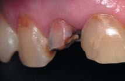 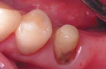 |
|---|---|
| II ТИП — корені на рівні ясен зі збереженням стінок | 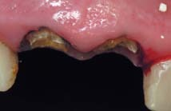 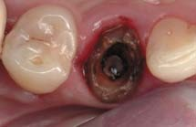 |
| III ТИП — корені, краї яких приховані під яснами | 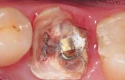 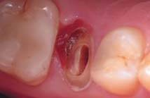 |
| IV ТИП — корені з руйнуванням біфуркації | 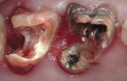 |
При першому типі зруйнованості, коли збережений дентин пришийкової ділянки обсягом мінімум 2 мм і більше, оператор має можливість як прямого, так і непрямого відновлення, при другому і третьому типі, коли зуби зруйновані на рівні або нижче рівня ясен і збережені стінки, непрямі конструкції передбачають виконання хірургічного подовження клінічної коронки, пародонтальні операції або ортодонтичне витягування зуба, однак такі корені при певних вихідних клінічних ситуаціях можна відновити у прямій техніці за рахунок можливостей точнішої ізоляції зуба системою рабердам, надійного склеювання між основою, що реставрується, і композитом.9,21 При відсутності обсягу над'ясенного дентину і циркулярного дентину не можна виготовляти нееластичні жорсткі вкладки з металу, цирконію через ризик відколу кукси, виникнення тріщин або непоправних фрактур кореня. Корені з руйнуванням у зоні біфуркації підлягають видаленню. Якщо обсяг дентину кореня достатній, то ми маємо право використовувати стандартні штифти, що спрощує відновлювальні процедури і економить час реставрації. Відсутність дентину кореня передбачає виготовлення індивідуальних вкладок прямим або непрямим методом — для зниження обсягу фіксуючого цементу, який за більшого обсягу зазнає підвищеного полімеризаційного стресу, може акумулювати циклічне навантаження і, як наслідок, розтріскуватися навколо штифта або вкладки.
Якщо уявити схематичне зображення штифтових конструкцій, то найкращим імітатором трубчастої і еластичної структури буде дерево. У схемі 1 описані критичні моменти при різних методиках відновлення сильно зруйнованих зубів. Мікротвердість і еластичність дентину може варіюватися в перитубулярній речовині та міжтрубчастому просторі дентину і також залежить від місця його локалізації в зубі (перехід від дентино-емалевої межі до парапульпарного дентину); перитубулярний дентин має модуль пружності близько 29 ГПа, в той час як міжтрубчастий дентин — близько 17,7 ГПа в парапульпарному дентині і близько 21,1 ГПа ближче до поверхні кореня.2 Виділяють еластичні (модуль пружності до 40 ГПа) і нееластичні (понад 40 ГПа) штифтові конструкції для відновлення девітальних зубів. Виживаність конструкції буде вищою, якщо модуль пружності (табл. 3) індивідуальної вкладки або стандартного штифта буде збігатися з модулем пружності дентину, а коронки або матеріалу, що імітує емаль, — з модулем еластичності емалі.1,2,5,10
| Обсяг твердих тканин | Збереження дентину в цервікальній ділянці, обсяг кістки навколо зуба, збереженість над'ясенного обсягу дентину. |
|---|---|
| Плановане навантаження на зуб | Зуби різної групової приналежності стійкі до різних типів навантаження. Для бічної групи критичне вертикальне навантаження, для передньої групи — трансверзальне. |
| Тип оклюзії | Нестабілізована оклюзія (прямий, перехресний прикус, втрата вертикального розміру оклюзії і т.д.) провокує розколи і поломки незалежно від методики відновлення. |
| Обтураційний матеріал кореневої пломби | Інгібітори та антагоністи адгезивного склеювання (евгенол, резорцин-формалін і т.д.) не дозволяють отримати ефективний зв'язок з дентином. Потрібна механічна ретенція. |
| Епоксидна смола | ≈ 4 ГПа |
|---|---|
| Дентин | ≈ 15 ГПа |
| Скловолокно | ≈ 40 ГПа |
| Композит | ≈ 16 ГПа |
| Емаль | ≈ 50 ГПа |
| Титан | ≈ 110 ГПа |
| Оксид цирконію | ≈ 185 ГПа |
| eMax PRESS | ≈ 95 ГПа |
| Золото | ≈ 90 ГПа |
| CoCr | ≈ 210 ГПа |
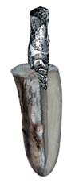 ЖОРСТКІ · АКТИВНІ Індивідуальні металеві вкладки | Не мають мікроретенційного зв'язку з дентином, мають ефект розколювання; при невідповідності конгруентності вкладки до стінки кореня можуть викликати неповні фрактури стінки каналу; вимагають наявності над'ясенної частини не менше 2 мм; рекомендуються при протезуванні жорсткими непрозорими каркасними коронками. |
|---|---|
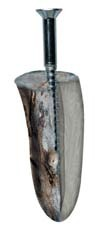 ЖОРСТКІ · АКТИВНІ Стандартні анкерні штифти | Фізико-механічні параметри відрізняються від властивостей дентину кореня; незадовільні естетичні можливості реставрації; не мають адгезії з дентином кореня — вимагають точного розрахунку глибини занурення, діаметру і форми для ретенції; концентрують напругу в апікальній третині і на кожному перетині та без поглинання передають на періодонт. |
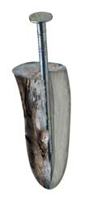 ЖОРСТКІ · ПАСИВНІ Стандартні пасивні металеві штифти | Фізико-механічні параметри відрізняються від властивостей дентину кореня; незадовільні естетичні можливості реставрації; можна застосовувати лише в каналах стандартного перерізу; великий обсяг цементу для фіксування може призводити до розцементування; м'якший розподіл напруги на стінки кореневого каналу, що збільшується до апікальної третини. |
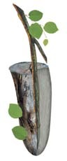 ЕЛАСТИЧНІ · ПАСИВНІ Стандартні скловолоконні штифти та індивідуальні армовані композитні вкладки | Відсутність корозії; фізико-механічні параметри близькі до параметрів тканин зуба; фіксуються в адгезивній техніці з одержанням мікромеханічного зв'язку; рівномірно розподіляють жувальний тиск на періодонт. |
Рекомендоване застосування пасивних штифтів, які м'яко діють на стінку каналу, хоча теж концентрують певну напругу в апікальній третині, через що рекомендоване їх введення до основної маси дельтовидних відгалужень у каналі, а це не глибше, ніж 2-3 мм до верхівки кореня. Однак слід розуміти, що будь-які металеві штифти мають низьку світлопровідність і можуть просвічуватися крізь невеликий обсяг тканин, що звужує можливість їх використання в естетично значущих зонах при відновленні напівпрозорими матеріалами.
Штифт — це важіль, і вигинаючись незалежно від матеріалу, він створює навантаження на стінки кореня, причому чим менше поле для адгезивного зв'язку ми маємо, тим слабша наша конструкція. Штифт фіксується не менше, ніж на половину кореневого каналу, і товщина кореня по периметру повинна бути не менше 2 мм. Штифти не можна встановлювати при погано обтурованих і викривлених каналах, руйнуваннях нижче рівня ясен, незбалансованій оклюзії.5,10 Слід зазначити, що жорсткі внутрішньоканальні штифти мають інші фізико-механічні властивості, концентрують тиск і передають його на пародонт. Еластичні штифти дозволяють провести відновлення за одне відвідування, вони позбавлені корозії, біологічно сумісні з тканинами зуба, і при їх використанні зберігається еластичність конструкції.16,20
Етапи реставрації на скловолоконному штифті
Клінічний приклад 1
Пропонуємо вашій увазі клінічний приклад відновлення сильно зруйнованого бічного різця на скловолоконному штифті системи ІзіПост/EasyPost компанії Дентсплай/Dentsply у тривалому періоді спостереження. Система включає комплект скловолоконних штифтів ІзіПост з відповідними за конусністю і розмірами дрилями для підготовки ложа під штифт (діаметр 0,8 — жовте і червоне маркування і діаметр 1,0 — синє і зелене маркування), Ларго і шаблон для підбору розміру штифта. Ці штифти складаються з 60% скловолокна і 40% епоксидної смоли, хімічно інертні, не токсичні, рентгеноконтрастні, їх можна стерилізувати автоклавуванням. Межа міцності на згинання становить 560 МПа. Щоб зламати скловолоконний штифт діаметром 1 мм, потрібно докласти зусилля 160 кг.17-20
Усі етапи цього відновлення виконано понад 5 років тому за класичним протоколом. Зуб лікований резорцин-формаліновим методом, причому кореневий канал вільно прохідний на всю довжину, а дентин має яскраво-червоний відтінок.
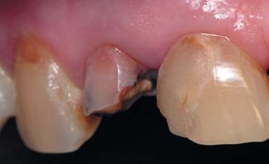
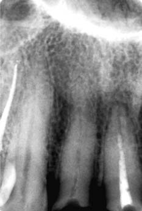
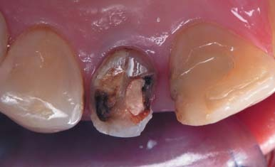
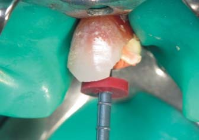
Після механічної обробки кореневого каналу системою Протейпер та медикаментозної обробки — обтурація системою Термафіл із силером АН+.
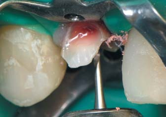
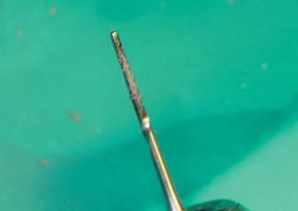
Бором ПостСпейс видалено гутаперчу з пластиковим стрижнем у доступі під штифт та проведено остаточне препарування перед реставрацією, яке включало висічення емалі і невеликого обсягу дентину у пришийковій зоні — для подальшого маскування дисколориту.
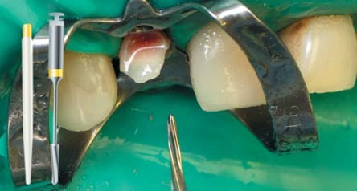
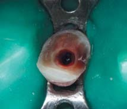
Виконано калібрування дрилем системи ІзіПост, який за формою і діаметром відповідає обраному штифту.
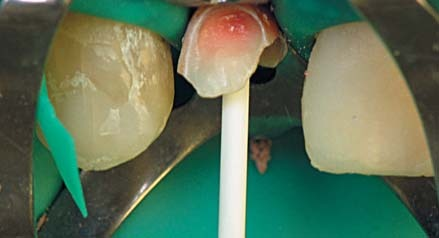
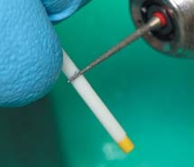
Примірка штифта у кореневому каналі на прицільній рентгенограмі. Обрізування штифта поза порожниною рота до його фіксації. Коронкова частина штифта повинна бути не менша, ніж 2/3 загальної його довжини.
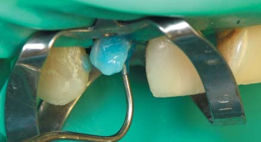
Протравлювання розчином 36% ортофосфорної кислоти виконується протягом 30 секунд, оскільки зуб раніше лікований резорцин-формаліновим методом і давно девіталізований. Кислоту можна вносити безпосередньо з канюлі шприца з кислотою або просувати її всередину зондом, розподіляючи по стінках каналу.
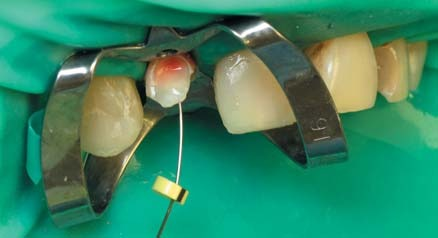
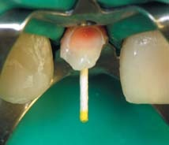
На стінках кореневого каналу не повинно бути залишків силера або гутаперчі. Кореневий канал повинен бути промитий водою або озвучений ультразвуком з водою. Кореневий канал обов'язково висушується, крім повітряного струменя, паперовим піном, оскільки через капілярний ефект у глибині він може залишитися вологим.
У 1999 році Франклін Теє, Університет Гонконга, уперше виявив факт відсутності з'єднання між композитом хімічного затвердіння або фіксуючим цементом подвійного затвердіння і однокомпонентним дентинним адгезивом світлової полімеризації або самопротравлюючим адгезивом. Було запропоновано використовувати активатор хімічного зв'язку для зв'язування кислих мономерів фотополімерного адгезиву. Однак адгезив, змішаний з активатором, втрачає в міцності прикріплення 5-7 МПа, тому суміш слід наносити лише в тій зоні, де це необхідно, залишаючи більший обсяг дентину вільним для склеювання з композитом.5,13,16,17
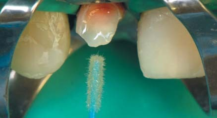
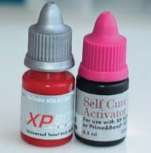
Перед застосуванням змішується адгезив Прайм Енд Бонд ЕнТі/ІксПі Бонд з активатором у пропорції 1:1. Адгезивна система набуває подвійного способу затвердіння. Адгезив, змішаний з активатором, втрачає в міцності прикріплення 5-7 МПа, тому суміш вносимо лише в зоні дії цементу хімічного затвердіння. Частина дентину, що залишилася, обробляється незмішаним адгезивом. Перед полімеризацією адгезив слід обов'язково промокнути паперовим піном.
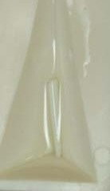
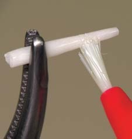
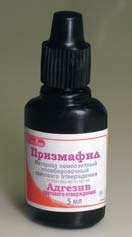
Штифт дезінфікується в спирті, фіксується щипцями-москітами для подальших маніпуляцій і ретельно висушується повітрям. Також штифт можна обробити смолою (пляшечка класичного адгезиву двокомпонентної адгезивної системи) для поліпшення адгезії з композитним цементом і композитом.
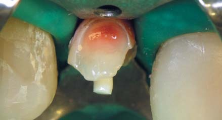
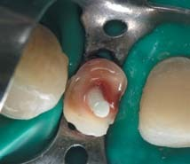
Якщо планується відновлення у прямій техніці, надлишки цементу видаляють до його затвердіння, для того щоб якомога більший обсяг дентину був звільнений для подальшого склеювання з композитом.
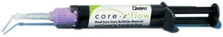
Композитний цемент подвійного затвердіння, на який фіксується штифт, повинен бути максимально наповненим, що запобігає розтріскуванню цементу через накопичені циклічні навантаження у процесі експлуатації реставрації, а його обсяг не повинен бути надмірним, бо це збільшує полімеризаційний стрес, тому необхідно підібрати штифт, переріз якого максимально відповідатиме перетину каналу. Також, якщо планується виготовлення композитної кукси з цього матеріалу, він повинен мати певні показники жорсткості для побудови та обробки її під непряму конструкцію. На сьогодні цим вимогам відповідає цемент подвійного затвердіння КорІкс флоу/CoreX flow (Дентсплай), придатний як для фіксації штифта, так і для створення безпосередньо кукси при виготовленні непрямої конструкції. Матеріал випускається у вигляді зручного двопоршневого шприца і має зручну змішувальну інтраоральну насадку. Така упаковка робить пряме, точне застосування матеріалу простим і мінімізує втрати матеріалу. Робочий час після замішування при температурі тіла (37°С) для маніпуляції введення штифта при внутрішньоротовому внесенні — 40 сек, робочий час після позаротового замішування — 1 хв 30 сек при кімнатній температурі (22°С). Цемент має достатню глибину затвердіння (до 3 мм за 20 сек), час самозатвердіння без фотоініціації становить 2-3 хвилини. Відтінок матеріалу універсально підходить до стандартного відтінку дентину, що дозволяє використовувати його для побудови кукси під тонкі прозорі коронки.
Відновлення виконується у пошаровій техніці у біоміметичній концепції, де ключову роль відіграватиме матеріал ЕстетІкс ЕйчДі відтінку WO, який дозволяє усунути проблему низької яскравості реставрації і створює ілюзію вітальності зуба. Було зроблено маскування червоного відтінку кореня у пришийковій ділянці, і відтінок WO укладений не в топографічних кордонах парапульпарного дентину. Плащовий дентин імітувався матеріалом Спектрум ТіПіЕйч відтінком А3,5О, основна емаль — відтінок В2 нанокомпозиту ЕстетІкс, поверхнева емаль — відтінок YE нанокомпозиту ЕстетІкс. Проксимальні контакти сформовані за допомогою контурованої лавсанової матриці відтінком В1 inc мікрогібріду Спектрум ТіПіЕйч.
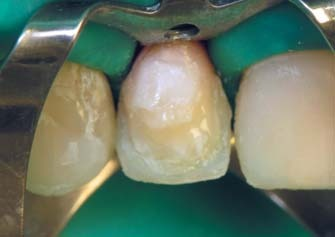
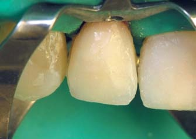
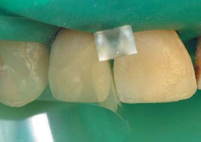
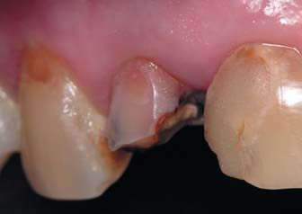
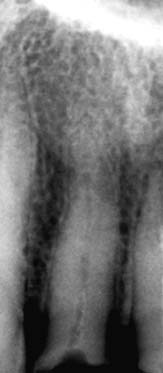
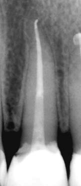
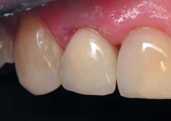
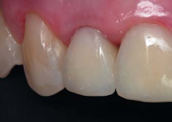
Через 5 років
Весь процес ендодонтичного переліковування та реставрації зайняв близько години. Відновлення за одне відвідування — одна з переваг використання скловолоконних штифтів. Після реставрації, незважаючи на темний відтінок кореня, просвічування його крізь тканини ясен не помічено. Реставрація естетично прийнятна навіть через 5 років. Враховуючи час, що минув з моменту реставрації, вельми функціональна. Звичайно ж, помітна втрата блиску композиту, який може бути відновлений пастою ПризмаГлосс ЕкстраФайн за лічені секунди.
Компанія Дентсплай запропонувала зручну систему КорЕндПост Систем/Core&Post System, основною перевагою якої є ідеальне поєднання продуктів з підтвердженою сумісністю. Лоток-органайзер цієї системи розроблений стоматологами для стоматологів, і всі компоненти розміщені у відповідності з етапами роботи та допомагають спростити процедуру установки внутріканальних скловолоконних штифтів і відновлення кукси. Також особливістю цієї системи є те, що вона укомплектована новішою версією штифтів Ікс-Пост/X-Post.
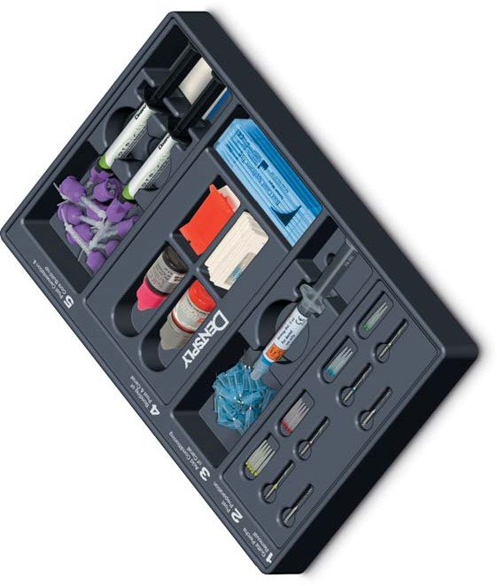
Більшість волоконних штифтів фіксується на композитний цемент подвійного затвердіння. Для прискорення роботи з нарощування кукси або виконання прямої композитної реставрації зручно стабілізувати штифти «точковим засвічуванням» фотополімерною лампою відразу після поміщення в цемент, щоб узятися до основного етапу формування. Це може призвести до неповної полімеризації цементу, і деякі клініцисти рекомендують почекати якийсь час перед полімеризацією, щоб мінімізувати полімеризаційний стрес у матеріалі. Але в штифтах ІксПост значно збільшено провідність світла без шкоди для рентгеноконтрастності, і цемент полімеризується на більшій глибині при однаковому впливі світлової енергії відразу після його первинної стабілізації, що полегшує перехід до подальших етапів.18,19 Відомо, що марки і моделі скловолоконних штифтів відрізняються за світлопровідністю внаслідок тих самих причин, через які вони відрізняються міцністю на згинання, рентгеноконтрастністю та втомною міцністю. Це пов'язано з відмінностями у сировині і способах виробництва штифтів. Однак світлопровідність має істотне значення.18-20 Флуоресценція штифтів також може впливати на естетичні характеристики реставрації, особливо при відновленні невеликих за обсягом зубів, коли штифт може просвічуватися крізь малий обсяг композиту в ультрафіолетовому спектрі.20
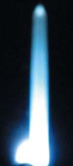
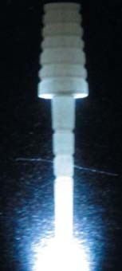
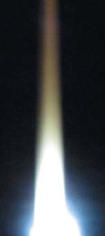
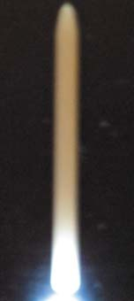
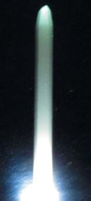
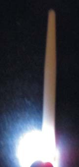
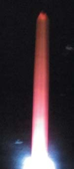
Наочний доказ відмінностей скловолоконних штифтів у здатності проводити світло.
Також велике значення має рентгеноконтрастність штифтів і фіксуючого матеріалу. Ідеально, щоб рентгеноконтрастність штифтів і фіксуючого цементу відрізнялася, що дасть можливість контролювати пороутворення та візуалізує обсяг композиту навколо штифта. Щоб зробити свої штифти рентгеноконтрастними без шкоди для їх механічних властивостей і світлопровідності, недостатньо просто додати у смолу рентгеноконтрастніші порошки. Головне — це створити міцніші низькомодульні рентгеноконтрастні волокна. Цей процес передбачає створення спеціального кварцового скла з підвищеним вмістом речовини для посилення рентгеноконтрастності без втрати міцності, і доцільніше робити основне волокно рентгеноконтрастнішим, ніж вносити речовини для посилення рентгеноконтрастності у композитну матрицю між волокнами.18,19
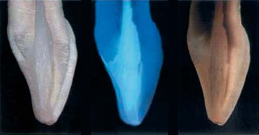
Поперечний розпил зуба, реставрованого за допомогою скловолоконного штифта (ліворуч); в ультрафіолеті (у центрі); у трансілюмінації (праворуч).
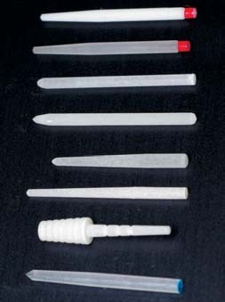
Скловолоконні кореневі штифти (праворуч під ультрафіолетовим світлом).
Рентгеноконтрастність скловолоконних штифтів ІксПост така, що ми маємо рентгенологічну тінь, яка відрізняється від рентгеноконтрастності цементу подвійного затвердіння та матеріалу і дозволяє контролювати ще й обсяг матеріалу навколо штифта і можливе пороутворення.18-20 Таким чином, штифти ІксПост мають вищі модуль пружності та характеристики міцності і вищу прозорість у порівнянні зі штифтами ІзіПост, причому, на думку М. Мартіньоні, це дозволяє фіксувати їх безпосередньо на текучий наповнений фотополімерний композит ЕсДіАр зі зниженим полімеризаційним стресом при зануренні до 4-6 мм за потужності випромінювання фотополімерної лампи понад 1200 мВт/см², що ще більше спрощує відновлення кукси. Їх висока прозорість може бути легко замаскована опаковим відтінком WO при достатньому обсязі коронки відновлюваного зуба.
Порівняння рентгеноконтрастності різних марок.
Поздовжній і поперечний зріз скловолоконного штифта під мікроскопом.
Поперечний зріз: порошком для посилення рентгеноконтрастності замінюють волокна, що в підсумку знижує їх міцність і опір втомлюваності.
Клінічний приклад 2
У поданому нижче випадку відновлення пацієнтка скаржилася на неестетичну усмішку через металокерамічну коронку на бічному різці праворуч, яка надає синюшного відтінку яснам і була зафіксована близько 5 років тому.
При об'єктивному огляді на зубі 12 — неестетична металокерамічна коронка, яка не має світіння в ультрафіолетовому спектрі.
Також є пломби з порушеним крайовим приляганням на апроксимальних поверхнях з орального боку зубів 11 і 21, стертість їх ріжучих країв, ділянки демінералізації у пришийковій зоні, а також композитне відновлення вестибулярної поверхні зуба 22, стертість рвучого горбика ікла 13 і вестибулярне положення зуба 23, що надає усмішці несиметричного, «хижого» вигляду.
Пацієнтка хотіла б виконати максимально неінвазивну реставрацію без перекриття всієї поверхні натуральної емалі. Клінічні ситуації, коли в рамках фронтального ансамблю поєднуються різні за опаковістю та стиранням матеріали, складні для відновлювальних заходів. Дуже часто зубні техніки оцінюють виконання окремої коронки як складніший і трудомісткіший захід, що вимагає додаткового примірювання у порожнині рота. Однак при збалансованій оклюзії можна виконати пряме відновлення сильно зруйнованого бічного різця на скловолоконному штифті і скоригувати стирання центральних різців, неестетичність композитного відновлення бічного різця праворуч і збалансувати форму бічного різця, який висувається вестибулярно.
Можна виконати цю реставрацію матеріалами, які мають оптичні характеристики і флуоресценцію натуральних тканин. І ендодонтичне переліковування, яке знадобилося після аналізу даних прицільної рентгенограми та об'єктивного аналізу матеріалу у внутріустьовій частині кореневого каналу, і власне відновлення зуба виконано за одне відвідування. Бічний різець відновлений у техніці біоміметичної концепції реставрації: парапульпарний матеріал імітований відтінком WO матеріалу ЕстетІкс, плащовий дентин — відтінком D3 ормокера ЦерамІкс, а основна і прозора емалі — відтінками B2, YE нанокомпозиту ЕстетІкс.
Також були виконані реставрації за типом пломб зубів 13, 11 і 21 і прямі композитні вініри на зубах 22 і 23. Оцінка реставрацій через два тижні демонструє гарний естетичний результат.
Висновки
Вибір методики відновлення залежить від клінічної ситуації і навичок оператора: при ідеальному перерізі кореневого каналу або можливості цей переріз створити без істотної втрати дентину можна використовувати стандартні штифти. Про те, які методи прямого відновлення нам доступні, якщо переріз кореневого каналу нестандартний, піде мова у наступній частині статті.
Література
- Dietschi D, Romelli M, Goretti A. Adaptation of adhesive posts and cores to dentin after fatigue testing//Int J Prosthodont. — 1997. — 10:498-507.
- Didier Dietschi, Olivier Duc, Ivo Krejci, Avishai Sadan. Biomechanical considerations for the restoration of endodontically treated teeth: A systematic review of the literature — Part 1. Composition and micro- and macrostructure alterations//Quintessence International. — 2007. — 9:735-743.
- Радлинский С.В. Биомеханика зубов и реставраций//ДентАрт. — 2006. — N2. — С.42-48.
- Christine M. Sedgley, Harold H. Messer//Are endodontically treated teeth more brittle?//Journal of Endodontics 7. — 1992. — P. 332-335.
- Jasmina Bijelic, Sufyan Garoushi, Pekka K Vallittu, Lippo V.J Lassila. Fracture Load of Tooth Restored with Fiber Post and Experimental Short Fiber Composite//Open Dent J. — 2011. — 5:58-65.
- Bader J, Ismail A. Survey of systematic reviews in dentistry//J Am Dent Assoc — 2004. — 135:464-473.
- Helfer AR, Melnick S, Shilder H. Determination of the moisture content of vital and pulpless teeth//Oral Surg Oral Med Oral Pathol. — 1972. — 34:661-670.
- Gutmann JL. The dentin root complex: Anatomic and biologic considerations in restoring endodontically treated teeth//J Prosthet Dent. — 1992. — 67:458-467.
- Huang TJ, Shilder H, Nathanson D. Effect of moisture content and endodontic treatment on some mechanical properties of human dentin//J Endod. — 1992. — 18:209-215.
- Creugers NH, Mentink AG, Kayser AF. An analysis of durability data of post and core restorations//J Dent. — 1993. — 21:281-284.
- Cruz-Filho AM, Souza-Neto MD, Saquy PC, Pecora JD. Evaluation of the effect of EDTAC, CDTA and EGTA on radicular dentin microhardness//J Endod. — 2001. — 27:183-184.
- Nikiforuk G, Sreebny L. Demineralization of hard tissues by organic chelating agents at neutral pH//J Dent Res. — 1953. — 32:859-867.
- Hulsmann M, Heckendorff M, Lennon A. Chelating agents in root canal treatment: Mode of action and indications for their use//Int Endod J. — 2003. — 36:810-830.
- Mountouris G, Silikas N, Eliades G. Effect of sodium hypochlorite treatment on the molecular composition and morphology of human coronal dentin//J Adhes Dent. — 2004. — 6:175-182.
- Kawasaki K, Ruben J, Stokroos I, Takagi O, Arends J. The remineralization of EDTA-treated human dentine Caries Res. — 1999. — 33:275-280.
- Leena Verma, Sidhi Passi. Glass Fibre-Reinforced Composite Post and Core Used in Decayed Primary Anterior Teeth: A Case Report//Case Rep Dent. — 2011.
- Терри Д.//Институт стоматологии. — 2003. — 4:79-81.
- Марко Феррари. Современная реставрация зубов после эндодонтического лечения//www.arkom-org.com
- Пьер-Люк Рейно. Cветопроводимость стекловолоконных штифтов//сайт www.arkom-org.com
- Рутковская А.С. Применение штифтов в терапевтической стоматологии//Современная стоматология. — 2006. — 4:14-17.
- Герсамия З. Реставрация зуба на корне в адгезивной технике направленной усадки. Выбор метода лечения при восстановлении сильноразрушенных зубов//ДентАрт. — 2014. — 4:11-18.
- Ross RS, Nicholls JI, Harrington GW. A comparison of strains generated during placement of five endodontic posts.//J Endodont. — 1991. — 17:450-6.